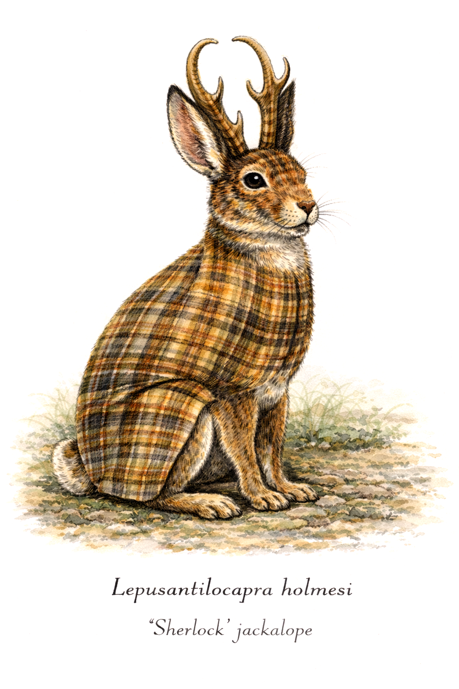

29 Why SCMs?
29.1 Setting the stage for Structural Causal Models (SCMs)
As ecologists, many of us have spent months (or years) collecting data in uncomfortable field conditions and have permanent scars (or gut flora) as proof. We return from the field excited to play ecological detective and see what our data analysis tells us about our system. So, we then proceed with an analysis that proceeds as follows:
- Identify a response variable.
- Add predictors that seem biologically relevant.
- Include random effects for grouping factors (most likely)
- Fit the model (linear/nonlinear/etc.)
- Interpret coefficients.

For example, you might implement the following generalized linear mixed model (GLMM), using R package glmmTMB:
\[ {provisioning\_visits}_{i} \sim {predator\_abundance}_{i} + {rainfall}_{i} + {flock\_size}_{i} \] where i indexes specific observations. This may seem (or actually be) a perfectly reasonable predictive ecological model. After all, this kind of structure is what most of us have been taught. But the central problem –and one that has massive implications for strong inference as well as the direction of future research– is how ecologists interpret such models.
This collection of weaknesses is receiving increasing attention. And some of the recent criticisms of the kitchen-sink modeling approach are especially brutal:
“Rather than moving towards a better understanding of causality using the causal frameworks available, observational ecology could be described as anchored in scientifically empty statistical procedures that provide answers to ambiguous questions that no one really wanted to ask.” (Franks et al. 2025. Biological Reviews)
And, speaking directly about multiple regression approaches:
“You put everything into a regression equation, toss with some creative story-telling, and hope the reviewers eat it. In general, this is not a valid approach, for well-known reasons. But it can get you published. Causal salad can discover causes too. But you have to get lucky. … No amount of data reliably turns salad into sense.” (Richard McElreath)
The core problem is not the specific types of statistical models. Rather, it is the lack of a clear causal questions guiding the modeling approach. In this section, we integrate what we have learned into a formal framework for understanding what ecologists everywhere strive for but seldom achieve: causality, or an understanding of the factors that affect, influence, cause, determine, alter, drive, generate, produce, or lead to observed phenomena. This is a powerful framework that was formalized fairly recently by Pearl (2009) but, unfortunately, has not been widely adopted in the field of ecology.
29.2 Summary comparison of kitchen-sink versus causal inference approaches
Below is a comparison of kitchen-sink versus causal (DAG) approaches. My primary intent with this table is to encourage you to think critically about what traditional ecological approaches (kitchen-sink models) are lacking. Specifically, in causal settings (again, the way in which most ecologists think and do), some approaches are not only weaker. The core issue is that these approaches fail to answer the questions set forth by formal Hypotheses and Predictions. Modern ecological approaches (causal inference via DAGs) emphasize that causal questions (or even implications) require explicit assumptions about data-generating processes. This does not mean simply devising a good question; it means that all research questions must be backed up by careful understanding of causal logic.
The 3-tier, 4-star scale below that I use is intentionally blunt and admittedly a bit ruthless. I have considered three dimensions: inferential validity, clarity of interpretation, and convenience. In short, the approach that obscures mechanisms or produces ambiguous answers scores comparatively lower. The approach that clarifies how ecological systems operate scores higher.
| Inferential validity | Does this approach recover the true causal quantity, rather than a biased/ill-defined estimate? |
| Clarity of interpretation | Does it make clear what is being estimated and how to interpret it ecologically? |
| Convenience | How easy is it to implement? |
| Tier | Feature | Kitchen-Sink Approach | Causal Inference (DAG) Approach |
|---|---|---|---|
| Risk of systematic bias | ☆☆☆☆ | ★★★★ | |
| Avoiding collider bias | ☆☆☆☆ | ★★★★ | |
| Avoiding mediator bias | ☆☆☆☆ | ★★★★ | |
| Clarity of estimand | ☆☆☆☆ | ★★★★ | |
| Transparency of assumptions | ☆☆☆☆ | ★★★★ | |
| Ability to estimate total effects | ☆☆☆☆ | ★★★★ | |
| Ability to estimate direct/indirect effects | ☆☆☆☆ | ★★★★ | |
| Interpretability of coefficients | ★☆☆☆ | ★★★★ | |
| Handling of confounders | ★☆☆☆ | ★★★★ | |
| Robustness to missing variables | ★☆☆☆ | ★★★☆ | |
| Ease of interpretation (final results) | ★☆☆☆ | ★★★★ | |
| Alignment with ecological theory | ★★☆☆ | ★★★★ | |
| Model simplicity (number of predictors) | ★★☆☆ | ★★★★ | |
| Ease of implementation | ★★★★ | ★★☆☆ | |
| Model flexibility (GLM/GLMM/GAMM) | ★★★★ | ★★★★ |
Hopefully, this stresses the need to overhaul our general approach to the study of ecology and adopt the Structural Causal Model (SCM).
29.3 What are Structural Causal Models (SCMs) (in ecology, specifically)?
Ecological systems are inherently complex. They involve causal relationships among mutiple environmental drivers, physiology, morphological traits, behaviors, and demographic outcomes. Traditional statistical models in ecology often emphasize association or prediction, which can obscure causal interpretation when mediators, confounders, or colliders are inadvertently included or omitted.
Structural Causal Models (SCMs) provide a unified framework for integrating ecological knowledge with statistical analysis. Without SCMs, even the most well-intentioned ecological expertise is effectively obscured by statistical treatment. Specifically, SCMs combine three core components:
- Directed acyclic graphs (DAGs): These are graphs that describe how we think our study system is causally structured (this affects that, ad nauseum)
- Structural equations: These formal equations parameterize causal relationships and help us carefully target specific questions
- Counterfactual reasoning: An approach to defining causal effects by comparing outcomes under different hypothetical interventions. This is akin to predicting from a best-fit model (except far better).
At first glance, SCMs may seem like just another complicated statistical framework to estimate effects of multiple variables. In fact, once you get to know them, you will see that they not only simpify many of your analyses, but they also help in a number of other ways. Specifically, they help researchers:
- Translate ecological knowledge into explicit causal assumptions
- Identify which causal effects can be estimated (logically) from a dataset
- Parameterize statistical models in a way that aligns with the causal structure
- Estimate total, direct, and indirect effects
- Understand their system with less data
- Integrate causal relationships from other studies
29.4 Verbiage of descriptive, associational, and causal hypotheses
It is critically important to be able to understand when scientific inference (yours or those who have published paper) aligns or fails to align with intended hypotheses. This involves identifying scientific intent by distinguishing between these three hypothesis types:
- Descriptive hypotheses: what patterns exist
- Associational/predictive hypotheses: statistical relationships that allow prediction
- Causal hypotheses: how changing one variable produces changes in another (SCMs!)
Each hypothesis type tends to use a characteristic verbiage. Learning how to recognize this verbiage can help you understand what type of inference authors are attempting to make. Furthermore, it allows you to quickly assess major logical fallacies and assess validity of results. And, by leveraging this language carefully and thoughtfully, you can describe your work unambiguously. Click on the expandable boxes below to view verbs and nouns associated with each type of hypothesis:
29.5 Misconception: SCMs require huge datasets
A very common misconception is that SCMs –like other big and fancy models– require unreasonably large and multidimensional datasets because they involve multiple variables and multiple equations. In reality, SCMs often require far less data per model than traditional “kitchen-sink” approaches.
Think about a global model that you have seen. Think about how many predictors you have seen in this model. Kitchen-sink models like this include a large number of predictors that are forced into a single equation. This inclusion increases the number of model parameters and increases the probability of have multi-collinearity. In stark contrast, SCMs split the system apart into multiple smaller submodels that reflect specific questions. Each one of these submodels includes only the parent variables specified by the DAG (we will discuss this in the next sections). In many cases, this may mean that you only need 1-3 predictors in a model to estimate an effect. Thus, building a DAG-based causal models usually means that you are working with far simpler and more stable models that yield stable estimates even with small to modest sample sizes.
Rather than putting the emphasis on more data (as kitchen-sink models do), SCMs instead emphasize well-supported ecological knowledge and causal assumptions (which most ecologists do most of the time anyway!).
29.6 Next up!
In sum, SCMs have three components:
- Directed acyclic graphs (DAGs), which describe how ecologists think a study system is causally structured (this affects that, ad nauseum)
- Structural equations are formal equations (models) that parameterize causal relationships and help ecologists carefully target specific questions
- Counterfactual reasoning is the act of defining causal effects by comparing outcomes under different hypothetical interventions. This is akin to predicting from a best-fit model (except far better).
In the following sections, we will address each of these components in turn, beginning with the incredibly useful Directed acyclic graphs (DAGs).
29.7 References for this section
- Download link Franks D.W., Ruxton G.D., and T.N. Sherratt. 2025. Ecology needs a causal overhaul. Biological Reviews. https://doi.org/10.1111/brv.70029
- Pearl, J. (2009). Causality: Models, reasoning, and inference (2nd ed.). Cambridge University